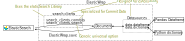

ElasticWrap¶
Why is elasticWrap?¶
ElasticWrap is intended to lower the barrier to entry when it comes to storing and retrieving ElasticSearch data. It attempts to do this by abstracting the process of query construction, as well as providing an architecture that more easily enables building explicit support for both understood structurings of data (Search Clients) as well as more conventional data formats (DataSources)
Overview¶
Elasticwraps, how do they work?¶
The ElasticWrap library centers around the concept of a Document, an in-memory copy of ElasticSearch data annotated with some meta-data. These documents may be generated from the ElasticSearch data store using search clients, saved to update the corresponding data in the ElasticSearch data store, as well as be converted to and from more conventional data types such as dictonaries or dataframes using ElasticWrap’s DataSources.
Namespaces¶
ElasticWrap also assumes a degree of data scoping in ‘projects’ and ‘namespaces’. It is expected that any ElasticSearch index queried with ElasticWrap follows the format {projectname}_{namespace}, where a ‘projectname’ refers to a specific analysis project and ‘namespace’ refers to the type of data that is in this index (such as git for commit data). This should keep data related to different analysis projects seperate, even if stored within the same ElasticSearch datastore.
Search Clients¶
Search Clients retrieve data from the ElasticSearch data-store constructing and returning Documents. Search Clients provide a collection of filters to construct queries determining which data will be retrieved. While a generic SearchInterface exists which should function on any data structure saved in the elasticSearch data store. Search Clients are intended to assign semantic meaning to the otherwise arbitrary JSON data ElasticSearch constructs. For example the CommitClient search client is custom build for non-enriched commit data as returned by the base Percival configuration. To this end it has explicit support for the git date format, and allows for time-based filtering using this date, anonymization and commit-hash-based filtering.
For more information on how to add search clients, see Adding searchers for custom data ElasticSearch patterns
DataSources¶
Data Sources allow converting between documents and more conventional formats for python programs. Data sources already exist for python dictionaries and pandas data frames.
The list of available dataSources was intended to be extensible, for more information on how to add dataSources see Adding ElasticWrap support for custom data formats.